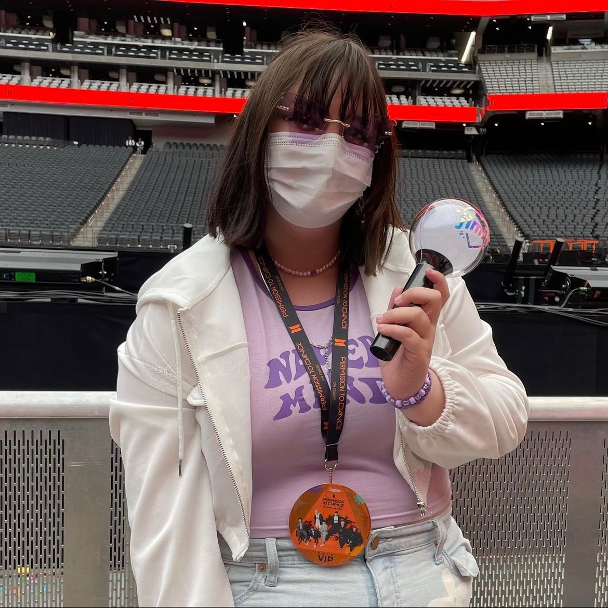

Fall Out Boy 2018

This was my first ever real concert. I had been to smaller music events before this, but nothing to this scale. I honestly don't remember much from it since it was 5 years ago, but I do remember I was right next to the stage! Fall Out Boy is a rock band, so it was a very loud concert and certainly overwhelming for my first concert. But I had so much fun! Fall Out Boy was my favorite band at the time, and I remember they had come to St Louis a little while back but I couldn't go, and I was very sad. But this concert was in Kansas City, and luckily my mom bought me tickets as a birthday present!
Break
Due to COVID19, I did not go to any concerts in between 2019 and 2021. I even had plans to see BTS during this time, but they had to cancel their tour. 😔
BTS Permission To Dance 2022
There is actually a funny story behind this concert. My favorite band is BTS, and I have been wanting to see them in concert for a while. Since no bands I like ever come to St Louis, my best friend who lives in Las Vegas was joking that BTS should come to Las Vegas. Vegas is basically my second home, since I go there all the time to visit my friend, so chances are I would be able to go to a BTS concert in Vegas. I then joked that we would get the best seats possible, not thinking either of these would happen. But lo and behold, a few months later, BTS announced a concert in Vegas! And by some miracle, I got the closest seats to the stage! I'm still not sure how this happened. I still consider this to be the best day of my life since I got to spend it with my best friend and I got to see my favorite band up close.

Lollapalooza
This was certainly the most interesting concerts out of all the ones I've been to. To start, it was a music festival. And not only that, it's one of the biggest festivals in the US. Now I had never been to a music festival before this, and I was going alone. I only went for one specific artist who wasn't performing until 10pm, so I didn't get there until 5pm or so. Considering I had never been to a music festivaal before and certainly not one this size, I told myself I was going to stay in the back to stay safe. But once I was there, I gained courage I didn't have before and pushed through the crowd. Granted, my view still wasn't great but it also wasn't the worst considering I got there so late.
Once I was in the crowd, there was no going back. While I did have fun, I did not pack enough water and ended up getting dehydrated and almost passing out at one point. I think I'll stick to regular concerts from now on... 😬
D-Day Tour 2023

This was by far the most eventful concert of all of them. It was my first time travelling completely alone, my first time camping, and my first time at a general admission concert. Let me start from the beginning. This concert took place in Chicago, so I had to ride the train up to Chicago and then use the public transport to get around, since I couldn't rent a car. This was all new and scary to me, but it surprisingly went well! Now this was a general admission concert, which basically means "first come first served" on getting a good spot. So I met up with some friends, and we pitched a tent outside of the arena to ensure we got a good spot. This luckily paid off! I ended up being #29 in line and got one of the best seats in the house. The artist even looked at me a few times!
While the concert itself was certainly an unforgettable experience, I also look back fondly on getting to spend time with friends while camping. I may have been super sore afterwards since one of my friends stole my blanket and i had to sleep on the hard ground, but it is still a funny story to look back on. I remember I slept over 15 hours when I got back from that trip.
Fall Out Boy 2023

By this point, I didn't really listen to Fall Out Boy anymore. I still appreciated their music, but it wasn't a prominent part of my playlist anymore. But when I heard they were coming to St Louis and the cheapest tickets were $20, I couldn't pass up the chance. They were such a big part of my early teenage years and I knew they would still put on a amazing show. As expected, the show was amazing. It even got me back into their music! I added quite a few of their songs back into my playlist.